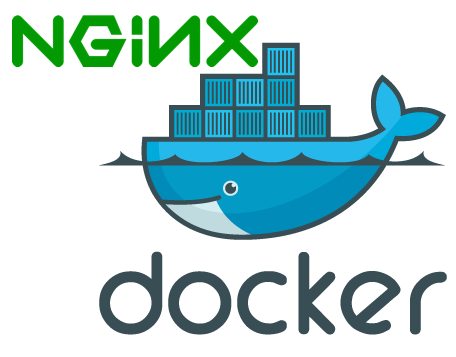

Success...
Sample Automation to setup Nginx on Vagrant had been successfully setup
Your HTML app is up and running on Vagrant NGINX port 80/443
Next up
Install Jenkins Application as a docker container on Vagrant VM Box or on your own local host machine
Install Ansible Tower as a docker container on Vagrant VM Box or on your own local host machine
Learn more about Docker and Ansible by visiting my gitHub repo